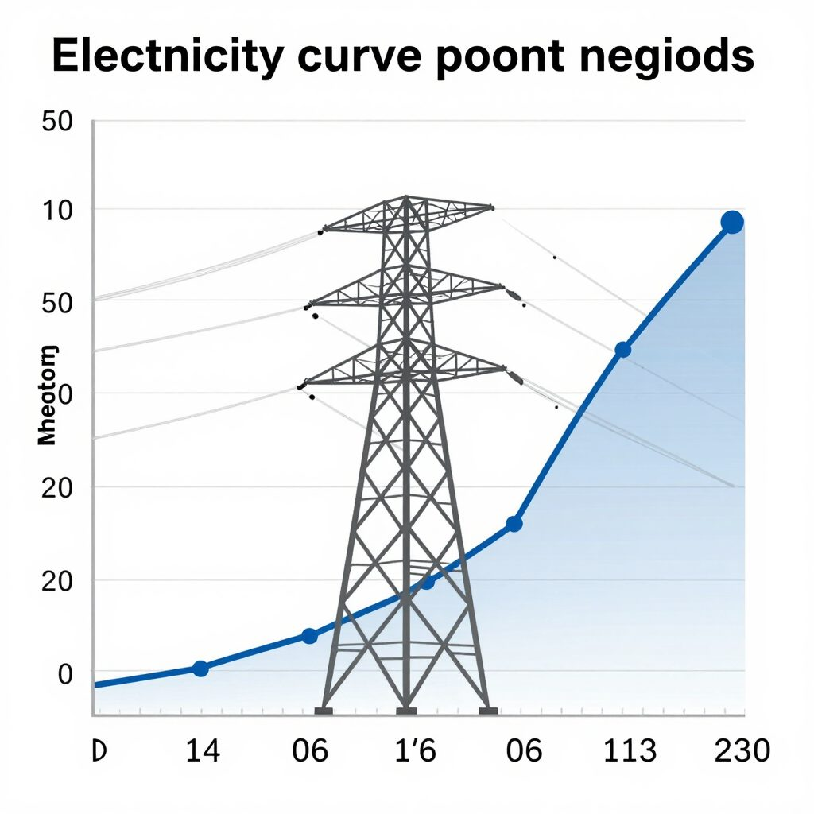

2026 · Énergie
Pourquoi la France vend parfois son électricité à prix négatif
Didier Moranval-Vincent · 485 mots · lecture 2 min

Première précision importante : la France n'est pas le seul pays concerné. Le dashboard que tu as capturé montre effectivement la France à 2,1 €/MWh (très bas) sur les 30 derniers jours, avec un minimum à -496,9 €/MWh , mais l'Allemagne a également enregistré une hausse de 50 % des heures à prix négatifs en 2026 par rapport à l'année précédente, et le 5 avril l'Allemagne affichait même le prix moyen journalier le plus bas à -16,34 €/MWh, contre -3,56 €/MWh en France ce même jour. Ce qui est spécifique à la France, c'est l'amplitude et la fréquence croissante du phénomène.
Pourquoi la France est particulièrement exposée ? 1. Le nucléaire : puissant mais rigide Les centrales nucléaires françaises ne peuvent pas être arrêtées facilement ou à faible coût. Les gestionnaires préfèrent payer pour écouler leur électricité plutôt que d'assumer les coûts élevés d'arrêt et de redémarrage.
La France a ~70% de nucléaire dans son mix — aucun autre pays européen n'a ce niveau de dépendance à une source aussi peu modulable. 2. Les renouvelables subventionnées qui produisent "à tout prix" Certaines installations renouvelables sous obligation d'achat sont "insensibles aux prix de marché et produisent à tout prix", avec un tarif garanti très souvent au-dessus du prix du marché (entre 100 et 200 €/MWh). Elles ne pâtissent donc pas des épisodes à prix négatifs.
Résultat : tout le monde injecte en même temps, personne ne coupe. 3. Une demande trop rigide Le creux de la mi-journée en été, avec une activité industrielle modérée et une climatisation encore limitée en France, illustre cette faible absorption au moment où la production solaire culmine. Ce creux est particulièrement marqué le week-end (environ 5,3 GW de demande en moins par rapport aux jours ouvrés). 4.
Des records qui s'enchaînent Les heures à prix négatifs en France ont atteint un record historique en 2024 : 352 heures, soit deux fois plus qu'en 2023, qui était déjà une année record. Les prévisions indiquaient que 2025 devrait dépasser les 400 heures à prix négatifs. 5. Le coût réel pour le pays RTE estime qu'au premier semestre 2024, les heures négatives ont entraîné environ 80 millions d'euros de pertes pour le parc national, touchant en premier lieu le nucléaire et l'hydroélectricité.
Ce que ça change (ou pas) pour les ménages Paradoxalement, ces prix négatifs sur le marché de gros ne se répercutent presque pas sur les factures des particuliers, qui restent protégés/figés par les tarifs réglementés. Seules des offres comme Tempo (EDF) ou Modulo (Ohm Énergie) permettent d'en profiter. En résumé : nucléaire inflexible + renouvelables subventionnées qui continuent de produire + faible consommation certains jours = trop d'électricité sur le réseau, et quelqu'un doit payer pour qu'on la prenne.
La France paie le prix de son mix électrique très décarboné mais structurellement peu agile. Source openData sur PulseGrid : monitoring du prix de l'electricité en Europe (créé par AlpesData et IA Perplexity
Publié à l'origine sur moranval.com. Repris ici dans la refonte du site, à l'identique sur le fond.